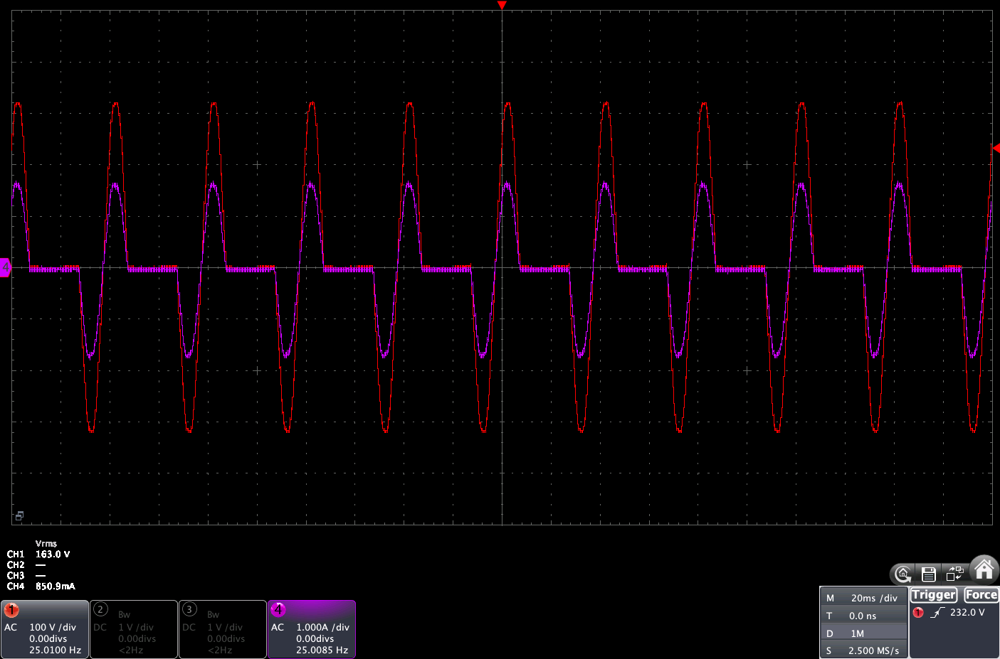

Cycle Stealing Dimmer Algorithm¶
This document details the cycle stealing algorithm used in MycilaDimmerCycleStealing. It employs a First-Order Delta-Sigma Modulator (related to Bresenham's algorithm) to achieve precise power control while strictly mitigating DC offsets in the AC load.
Overview¶
Cycle stealing (or integral cycle control) varies power by delivering complete half-cycles of the AC sine wave to the load.
- 100% Power: The solid-state relay (SSR) is ON for every half-cycle.
- 50% Power: The SSR is ON every other half-cycle.
- 1% Power: The SSR is ON for 1 half-cycle out of every 100.

Unlike phase control, which chops the sine wave (generating high EMF noise), cycle stealing switches only at zero-crossing points, generating virtually zero noise. This makes it ideal for resistive loads like heaters.
The Algorithm: Delta-Sigma Modulation¶
Instead of using a fixed time window (e.g., "count 20 cycles and turn on for 5 of them"), this implementation uses a continuous accumulator approach. This allows it to adapt instantly to changes in the target duty cycle without waiting for a window to reset.
1. The Accumulator (density_error)¶
We maintain a running float value called density_error. This represents the "energy debt" — the amount of power the load should have received but hasn't yet.
Every Zero-Crossing (Half-Cycle):
- We add the target
dutyCycle(0.0 to 1.0) todensity_error.- Example: If the target is 30% (0.3), we look at the debt. If we don't fire providing 0 power, the debt grows by 0.3.
- We check if
density_error >= 1.0.- 1.0 represents the energy of one full half-cycle.
- If the debt is greater than a full cycle, it means we "owe" the load at least one pulse.
2. Decision Logic¶
If density_error >= 1.0, we attempt to fire the TRIAC/SSR.
- If we fire: We subtract
1.0fromdensity_error. This pays off the debt. - If we don't fire: The
density_errorkeeps growing until the next cycle.
3. DC Component Balancing (Critical)¶
AC loads (like transformers or even heating elements) perform best when the current is symmetric. If we blindly fired pulses based only on the accumulator, we might accidentally fire only on positive half-cycles (rectification), causing a massive DC current component that can saturate transformers or trip breakers.
To solve this, we track the DC Balance:
- Positive Half-Cycle: counts as
+1balance. - Negative Half-Cycle: counts as
-1balance.
We maintain a counter dc_balance.
- We only allow a pulse to fire if it helps return the balance to zero.
- If
dc_balanceis positive (too many positive pulses), we wait for a negative half-cycle to fire.
// Simplified logic:
phase_val = current_is_positive ? 1 : -1;
bool helps_balance = (balance == 0) ||
(balance > 0 && phase_val < 0) ||
(balance < 0 && phase_val > 0);
if (density_error >= 1.0 && helps_balance) {
fire();
balance += phase_val;
density_error -= 1.0;
}
Why This Works¶
- Instant Response: If you change the duty cycle from 10% to 90%, the
density_erroraccumulation rate changes immediately. No waiting for a "1-second window" to finish. - Frequency Independence: It works identically on 50Hz or 60Hz grids without configuration. 50% power is simply "50 pulses out of 100" or "60 pulses out of 120".
- Perfect Symmetry: The DC guard ensures that over time, the net DC offset is exactly zero.
Example Trace (30% Power)¶
| Cycle | Type | Accumulator (+0.3) | Action | New Accumulator | Balance | Note |
|---|---|---|---|---|---|---|
| 1 | Pos | 0.3 | OFF | 0.3 | 0 | Not enough debt |
| 2 | Neg | 0.6 | OFF | 0.6 | 0 | |
| 3 | Pos | 0.9 | OFF | 0.9 | 0 | |
| 4 | Neg | 1.2 | ON | 0.2 | -1 | Fire (Neg)! Balance becomes -1 |
| 5 | Pos | 0.5 | ON | -0.5* | 0 | Fire (Pos)! Restore balance to 0 |
| 6 | Neg | ... | ... | ... | ... |
(Note: In the simplified view, if debt remained high, we might fire back-to-back if polarity allows).